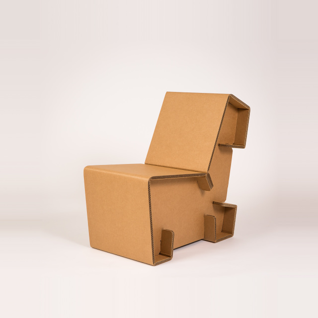
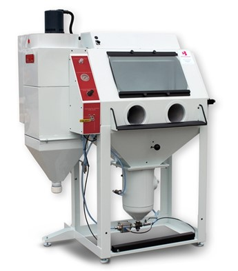

Sand Carving is a technique that uses high pressure abrasive to etch glass, crystal, marble stone or other surfaces. The process is also more commonly called sandblasting. We use a sand-like material called aluminum oxide as our abrasive in class. The process is relatively simple to follow. First you will create a image file using either CorelDraw or Illustrator. This is then printed onto special sheets of AccuBlack sheets to create the template. This is then exposed using a sheet of RapidMask film in the Lectralite unit. This will transfer what you have printed on the AccuBlack sheet onto the RapidMask. this usually takes around 2 1/2 minutes of exposure time. You then need to apply the mask to the object being sandcarved. Once the mask is applied, you will need to place the object into the CrystalBlast Elite cabinet to apply the abbrasive to the object.
Using the machines and knowledge you gained from your DigFab course, design a prototype to be sold in the business we visited on Tuesday. The item needs to be within the price range set out.
1. Design Challenge
2. Sand Carving
3. Product Creation Challenge $50